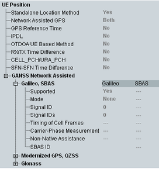

Positioning UE Capabilities
The UE capability related to the geographical position indicates in which navigation standards, signals and methods the UE supports.
This section provides the UE capabilities for positioning.

UE positioning capabilities
- "Standalone Location Method":
Indicates whether the UE can measure its location by some means unrelated to UTRAN (for example, if the UE has access to a standalone GPS receiver) - "Network Assisted GPS":
Indicates whether the UE supports the assisted GPS schemes network-based and/or UE-based - "GPS Reference Time":
Indicates whether the UE is able to measure GPS reference time as defined in 3GPP TS 25.215 - "IPDL":
Indicates whether the UE is able to use idle periods in the downlink (IPDL) to enhance its "SFN-SFN observed time difference – type 2" measurement - "OTDOA UE Based Method":
Indicates whether the UE supports the observed time difference of arrival (OTDOA) UE-based schemes - "RX/TX Time Difference":
Indicates whether the UE is able to measure the RX - TX time difference type 2 - "CELL_PCH/URA_PCH":
Indicates whether the UE positioning measurements using the assisted GPS method are valid in CELL_PCH and URA_PCH RRC states - "SFN-SFN Time Difference":
Indicates whether the UE is able to perform the SFN-SFN observed time difference type 2 measurement - "GANSS Network Assisted":
Indicates which navigation standard of the assisted Galileo and more navigation satellite systems (A-GANSS) the UE supports.Also, information related to supported signal is displayed:– Mode: indicates whether the UE supports the A-GANSS schemes network-based and/or UE-based – Signal ID: indicates which signal of the A-GANSS the UE supports (see 3GPP TS 25.331, section 10.3.3.45a) – Signal IDs: defines whether the UE is able to measure on more than one GANSS signal (see 3GPP TS 25.331, section 10.3.3.45, note 2) – Timing of cell frames: indicates whether the UE supports the timing of cell frames measurement – Carrier-phase measurement: indicates whether the UE supports carrier-phase measurements – Non-native assistance: indicates whether the UE supports non-native assistance choices – SBAS ID: indicates which signal of the SBAS the UE supports (see 3GPP TS 25.331, section 10.3.3.45, note 1)